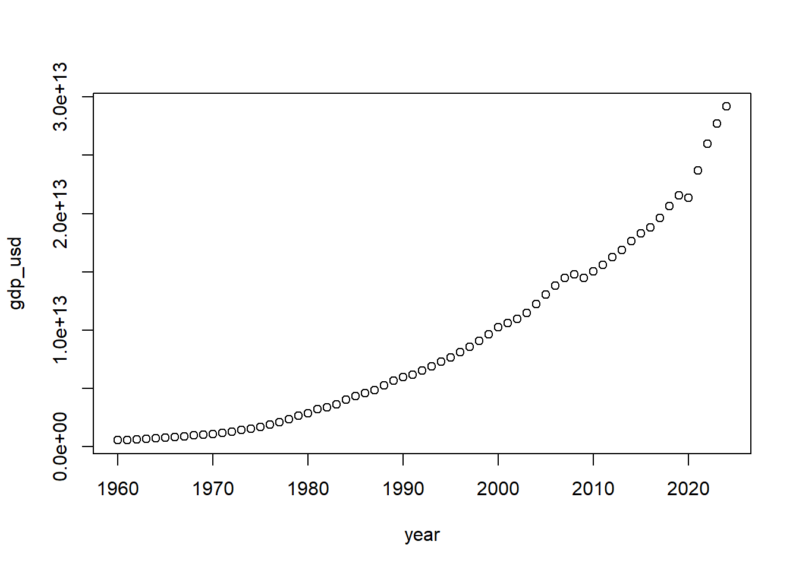

library(xml2)
library(httr)
xml_data <- read_xml('
<bookstore>
<book id="b1">
<title>R for Data Science</title>
<author>Hadley Wickham</author>
<price currency="USD">39.99</price>
</book>
<book id="b2">
<title>Advanced R</title>
<author>Hadley Wickham</author>
<price currency="USD">49.99</price>
</book>
</bookstore>
')4 XML Data
Another type of data that we may see besides JSON is XML (Extensible Markup Language), which stores information in tags and attributes. An example of how it looks can be seen below:
Looking at the snippet above, we can see that “bookstore” is the root element, which is the container holding the entire dataset (this is kind of like the name of the dataset). Within the root element we have a child element and attributes, which is the different book ids (this is kind of like the observations). Finally, we have nested elements which hold the variable values. The general structure of the code above can be represented as:
bookstore
├── book (id="b1")
│ ├── title: "R for Data Science"
│ ├── author: "Hadley Wickham"
│ └── price (currency="USD"): "39.99"
└── book (id="b2")
├── title: "Advanced R"
├── author: "Hadley Wickham"
└── price (currency="USD"): "49.99"To convert the data to something workable in R we will need to do a few things. The functions xml_find_all() will allow us to extract all of the nodes relating to the XML file. For instance, in the code below we can see how we can identify the child elements and nested element values:
xml_find_all(xml_data, "//book"){xml_nodeset (2)}
[1] <book id="b1">\n <title>R for Data Science</title>\n <author>Hadley Wic ...
[2] <book id="b2">\n <title>Advanced R</title>\n <author>Hadley Wickham</au ...xml_find_all(xml_data, "//title"){xml_nodeset (2)}
[1] <title>R for Data Science</title>
[2] <title>Advanced R</title>xml_find_all(xml_data, "//author"){xml_nodeset (2)}
[1] <author>Hadley Wickham</author>
[2] <author>Hadley Wickham</author>xml_find_all(xml_data, "//price"){xml_nodeset (2)}
[1] <price currency="USD">39.99</price>
[2] <price currency="USD">49.99</price>This by itself is not incredibly useful though, as it is still formatted as a xml_nodeset. To get around this and to actually extract the information we can use the xml_text() function to convert the values into workable text.
titles <- xml_text(xml_find_all(xml_data, "//title"))
titles[1] "R for Data Science" "Advanced R" authors <- xml_text(xml_find_all(xml_data, "//author"))
authors[1] "Hadley Wickham" "Hadley Wickham"prices <- xml_text(xml_find_all(xml_data, "//price"))
prices[1] "39.99" "49.99"Now, since the price element has an attribute attached to it (currency in this scenario as it is specified within the <> symbols). To extract this we can use the xml_attr() function while referencing the nested element. If we want to pull all of the attributes from the node we can use the xml_attrs() function.
currencies <- xml_attr(xml_find_all(xml_data, "//price"), "currency")
currencies[1] "USD" "USD"Finally, to make it readable into R we can combine all of the elements that we created above into a single data.frame.
# Combine into a data frame
df <- data.frame(title = titles, author = authors,
price = as.numeric(prices), currency = currencies)
df title author price currency
1 R for Data Science Hadley Wickham 39.99 USD
2 Advanced R Hadley Wickham 49.99 USDNow lets take at another example where we scrape the data off of a website. Below we have a url which directs us to a page with XML data that describes the yearly GDP for the United States. Opening up the website (or looking at the initial attributes) shows us that this data is actually spread across multiple pages.
url <- "http://api.worldbank.org/v2/country/US/indicator/NY.GDP.MKTP.CD?format=xml"<wb:data xmlns:wb="http://www.worldbank.org" page="1" pages="2" per_page="50" total="65" sourceid="2" lastupdated="2025-07-01">
<wb:data>
<wb:indicator id="NY.GDP.MKTP.CD">GDP (current US$)</wb:indicator>
<wb:country id="US">United States</wb:country>
<wb:countryiso3code>USA</wb:countryiso3code>
<wb:date>2024</wb:date>
<wb:value>29184890000000</wb:value>
<wb:unit/>
<wb:obs_status/>
<wb:decimal>0</wb:decimal>
</wb:data>
-------- Data Omitted --------
<wb:data> xml_doc <- read_xml(url)
xml_attrs(xml_find_all(xml_doc, "//wb:data")[1])[[1]]
page pages
"1" "2"
per_page total
"50" "65"
sourceid lastupdated
"2" "2025-07-01"
xmlns:wb
"http://www.worldbank.org" Because the data is spread across multiple pages, it might be more beneficial to use the GET() function, as we will have full control over what is scraped from the website. Notice in the code below that using the GET() function allows us to specify what format the data is and what page we want it to query. After specifying that, we can then read the xml file and convert it into a workable data.frame in R.
res1 <- GET(url, query = list(format = "xml", page = 1))
xml1 <- read_xml(content(res1, "text", encoding = "UTF-8"))
res2 <- GET(url, query = list(format = "xml", page = 2))
xml2 <- read_xml(content(res2, "text", encoding = "UTF-8"))
years1 <- xml_text(xml_find_all(xml1, "//wb:date"))
values1 <- xml_text(xml_find_all(xml1, "//wb:value"))
df1 <- data.frame(
year = as.integer(years1),
gdp_usd = as.numeric(values1)
)
years2 <- xml_text(xml_find_all(xml2, "//wb:date"))
values2 <- xml_text(xml_find_all(xml2, "//wb:value"))
df2 <- data.frame(
year = as.integer(years2),
gdp_usd = as.numeric(values2)
)
gdp_data <- rbind(df1, df2)
head(gdp_data) year gdp_usd
1 2024 2.918489e+13
2 2023 2.772071e+13
3 2022 2.600689e+13
4 2021 2.368117e+13
5 2020 2.135411e+13
6 2019 2.153998e+13dim(gdp_data)[1] 65 2plot(gdp_data)